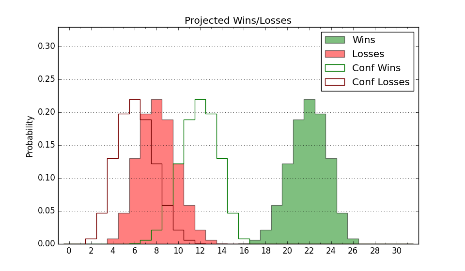

| Home | Game Probabilities | Conferences | Preseason Predictions | Odds Charts | NCAA Tournament |
| City: | Huntington, West Virginia | |
| Conference: | Sun Belt (5th)
| |
| Record: | 2-2 (Conf) 12-4 (Overall) | |
| Ratings: | Comp.: 9.1 (84th) Net: 10.1 (84th) Off: 105.5 (96th) Def: 95.5 (85th) SoR: 8.4 (109th) |
| Remaining | ||||||
|---|---|---|---|---|---|---|
| Date | Opponent | Win Prob | Pred. | |||
| 1/12 | Southern Miss (99) | 68.6% | W 76-70 | |||
| 1/14 | Old Dominion (160) | 80.3% | W 77-67 | |||
| 1/19 | @ Texas St. (183) | 59.4% | W 70-67 | |||
| 1/21 | @ Arkansas St. (319) | 83.9% | W 74-63 | |||
| 1/26 | Louisiana Monroe (317) | 94.6% | W 84-63 | |||
| 1/28 | Georgia St. (247) | 90.2% | W 77-61 | |||
| 2/2 | @ Appalachian St. (208) | 64.6% | W 72-68 | |||
| 2/4 | @ Louisiana Lafayette (139) | 49.6% | L 78-79 | |||
| 2/9 | @ Coastal Carolina (276) | 77.0% | W 79-70 | |||
| 2/11 | @ Georgia St. (247) | 73.1% | W 72-65 | |||
| 2/16 | Georgia Southern (230) | 88.4% | W 77-62 | |||
| 2/18 | Troy (149) | 78.7% | W 78-68 | |||
| 2/22 | @ James Madison (80) | 32.7% | L 74-79 | |||
| 2/24 | @ Old Dominion (160) | 54.5% | W 73-71 | |||
| Previous | Game Score | |||||
| Date | Opponent | Win Prob | Result | Off | Def | Net |
| 11/7 | @Queens (218) | 66.1% | L 82-83 | 2.3 | -8.1 | -5.9 |
| 11/14 | Tennessee Tech (292) | 93.1% | W 91-65 | 8.1 | 2.3 | 10.4 |
| 11/17 | @Miami OH (329) | 86.3% | W 95-69 | -3.4 | 16.7 | 13.3 |
| 11/19 | Coppin St. (258) | 90.8% | W 86-67 | -8.5 | 7.6 | -0.8 |
| 11/21 | Chicago St. (282) | 92.2% | W 82-70 | 0.4 | -18.2 | -17.8 |
| 11/26 | Morehead St. (288) | 92.8% | W 83-59 | 3.5 | 5.1 | 8.6 |
| 11/30 | Akron (138) | 77.0% | W 68-57 | -10.3 | 13.6 | 3.4 |
| 12/3 | Ohio (164) | 81.5% | W 83-69 | 5.6 | -0.0 | 5.5 |
| 12/8 | @Duquesne (141) | 49.9% | W 82-71 | 7.9 | 9.1 | 17.0 |
| 12/10 | @Robert Morris (242) | 72.7% | W 69-60 | -12.3 | 12.6 | 0.3 |
| 12/13 | @UNC Greensboro (137) | 49.5% | L 67-75 | 0.2 | -14.6 | -14.4 |
| 12/17 | Toledo (115) | 72.8% | W 100-85 | 14.0 | -8.5 | 5.5 |
| 12/29 | Appalachian St. (208) | 86.1% | W 79-53 | 7.5 | 8.4 | 15.9 |
| 12/31 | James Madison (80) | 62.4% | L 66-72 | -11.3 | -3.7 | -15.0 |
| 1/5 | @Georgia Southern (230) | 69.2% | L 76-81 | 6.3 | -20.4 | -14.1 |
| 1/7 | Coastal Carolina (276) | 91.9% | W 81-66 | -2.8 | 1.7 | -1.1 |
| Stats & Trends | |||||
|---|---|---|---|---|---|
| Current | Day | Week | Month | Season | |
| Composite | 9.1 | -0.1 | -0.8 | +1.2 | +7.4 |
| Comp Rank | 84 | +1 | -4 | +7 | +50 |
| Net Efficiency | 10.1 | -0.3 | -1.4 | -1.4 | -- |
| Net Rank | 84 | -3 | -7 | -8 | -- |
| Off Efficiency | 105.5 | -0.4 | +0.2 | +1.7 | -- |
| Off Rank | 96 | -1 | +8 | +35 | -- |
| Def Efficiency | 95.5 | +0.1 | -1.6 | -3.1 | -- |
| Def Rank | 85 | +6 | -20 | -30 | -- |
| SoS Rank | 334 | -19 | -12 | +25 | -- |
| Exp. Wins | 21.9 | +0.0 | -0.9 | -0.5 | +3.0 |
| Exp. Conf Wins | 11.9 | +0.0 | -0.9 | -1.0 | +0.6 |
| Conf Champ Prob | 26.4 | +6.8 | +6.2 | -2.8 | +3.5 |

| Advanced Stats | ||
|---|---|---|
| Stat | Value | Rank |
| Off Eff FG % | 0.509 | 149 |
| Off Ast Ratio | 0.172 | 27 |
| Off ORB% | 0.324 | 44 |
| Off TO Rate | 0.134 | 26 |
| Off FT Ratio | 0.220 | 352 |
| Def Eff FG % | 0.477 | 99 |
| Def Ast Ratio | 0.136 | 151 |
| Def ORB% | 0.297 | 277 |
| Def TO Rate | 0.160 | 176 |
| Def FT Ratio | 0.240 | 42 |